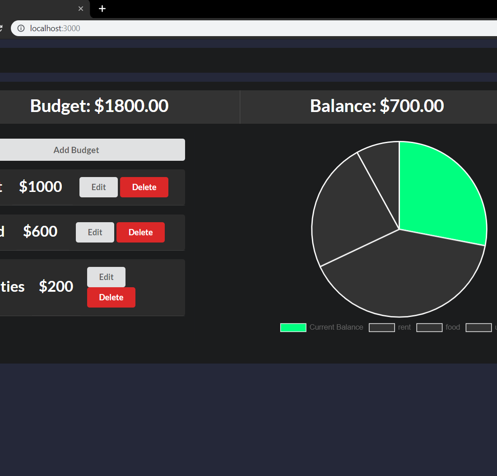
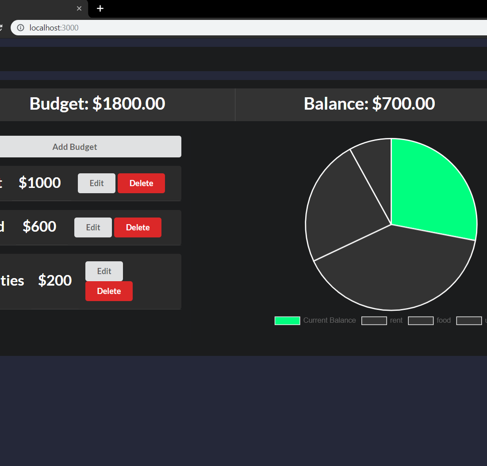

Background
Developing software has become an outlet for creative problem solving that I never knew was possible. On a daily basis, I'm able to learn new skills and continuously redefine what I think I know.
- First exposure to coding was in high school with some basic manipulation of MySpace by embedding music players, images, and changing colors.
- Having an interest in music, I found it easy to spend considerable amounts of free time sequencing electronic music and tinkering with sound effects using frequency modulation in Ableton Live.
- Having a small familiarity with HTML and CSS with MySpace, I researched different ways to present the music I was making.
- Finally, during college I was exposed to simple automation techniques using Applescripts and started thinking of new tasks to automate.
Projects
Balance
- This project uses a pie chart to represent the difference amount between a user's income and budget amounts
- Objectives included representing data visually, having a clean and understandable interface, and start a project that I could continuously revisit for years to come.
- Tools included React, React Router Dom, React Semantic UI, and Chart js
Nutshell
- Entity Relationship Diagrams
- CRUD Methods
- Authentication using Session Storage
- JSON-server
Tracker
View Code- Vanilla JS prototype for Balance
- Authentication and Conditional Rendering
- Persistant storage with json-server
Technologies
Javascript
HTML/CSS


React JS

Git / Github
Git Bash
Webpack